สตอรีบอร์ด · ถ้าวันนี้เป็นวันแต่งงานของคุณOdd Hours · 30 ช็อตตามบท · ห้องพิธีวิวพระจันทร์เต็มดวง
ห้องพิธีกับตัวละครใช้ของที่ทำไว้แล้ว ส่วนหน้าจอมือถือ ลิฟต์ ห้องพัก และทางเดิน เป็นแบบร่างในโทนเดียวกัน ไว้ดูจังหวะและมุมกล้องก่อน ตัวละครยังยืนท่าตรงแบบแผ่นตัวละคร ท่าทางจริงจะทำตอนภาพนิ่ง ซับไทยวางที่ราว 74% ของความสูงเฟรมตามมาตรฐานช่อง
เปิดเรื่อง
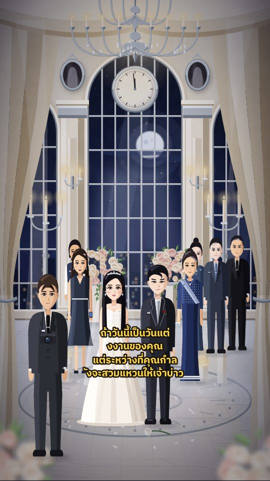
01WS · ซูมเข้าช้า ๆ
เสียง: ผู้บรรยาย
ภาพกว้างห้องพิธีคืนพระจันทร์เต็มดวง คู่บ่าวสาวยืนกลางลายแหวน แขกยืนสองข้าง กล้องค่อย ๆ ดันเข้าหาคู่บ่าวสาวฉากที่ 1 · วันที่มีความสุขที่สุด
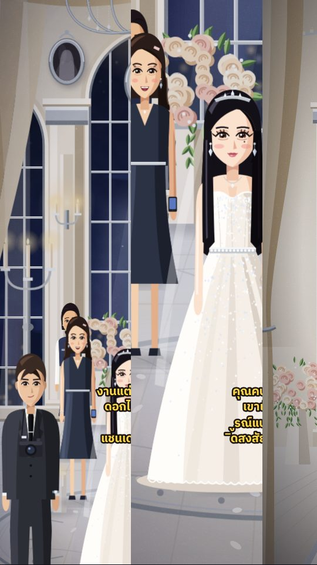
02WS · แพนลงจากโคม
เสียง: ผู้บรรยาย
เริ่มที่โคมระย้ากับนาฬิกา แล้วแพนลงมาเห็นดอกไม้และแขกที่กำลังปรบมือ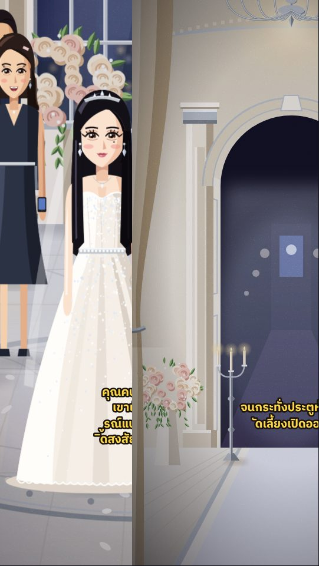
03MS · คู่บ่าวสาว
เสียง: ผู้บรรยาย
ภาพสองคน เจ้าสาวยิ้ม เจ้าบ่าวยิ้มมุมปาก ดูสมบูรณ์แบบ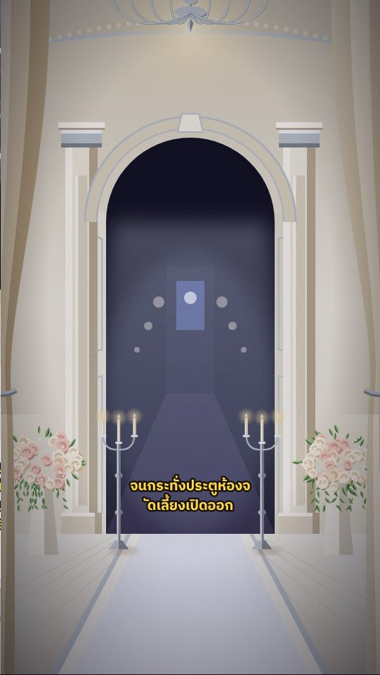
04WS · ประตู · กล้องนิ่ง
เสียง: ผู้บรรยาย
ประตูบานคู่สูงสองชั้นที่ปิดอยู่ค่อย ๆ แง้มออกเข้าหากล้อง แสงจันทร์เย็นจากทางเดินพาดยาวลงพรม เงียบหนึ่งจังหวะ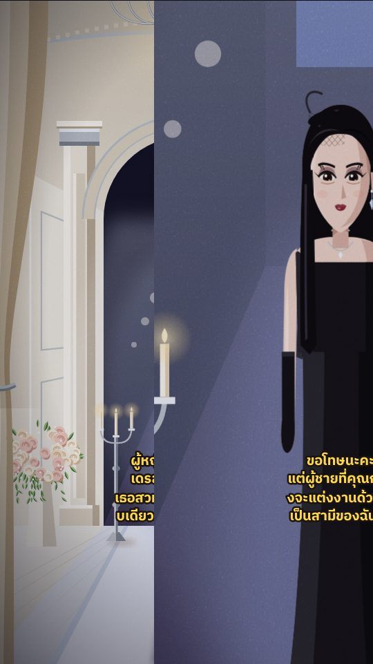
05MS · ประตู + อินเสิร์ตแหวน
เสียง: ผู้บรรยาย
ผู้หญิงชุดดำยืนครึ่งตัวในเงาตรงกรอบประตู หยุดนิ่งสั้น ๆ แล้วก้าวเข้ามา ตัดอินเสิร์ตแหวนเงินบนถุงมือดำ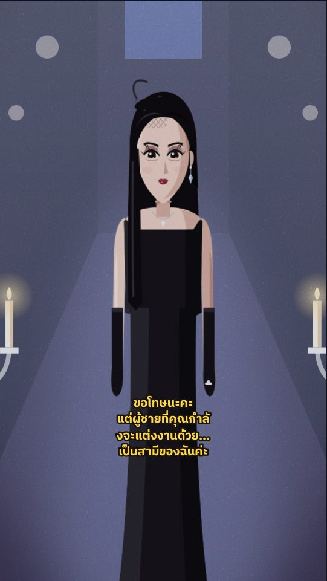
06CU · ผู้หญิงชุดดำ
เสียง: ผู้หญิงชุดดำ
กล้องอยู่ที่ผู้พูด หน้าเธอนิ่ง พูดเบาแต่ชัดฉากที่ 2 · ผู้หญิงปริศนา
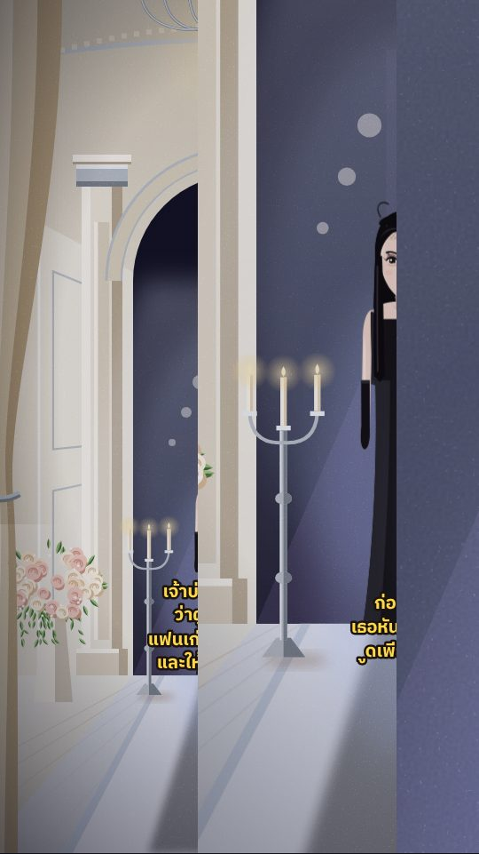
07MS · ประตู
เสียง: ผู้บรรยาย
รปภ. เดินเข้ามาประกบผู้หญิงชุดดำ เจ้าบ่าวพูดกับแขก (เสียงบรรยาย ไม่ขยับปากใคร)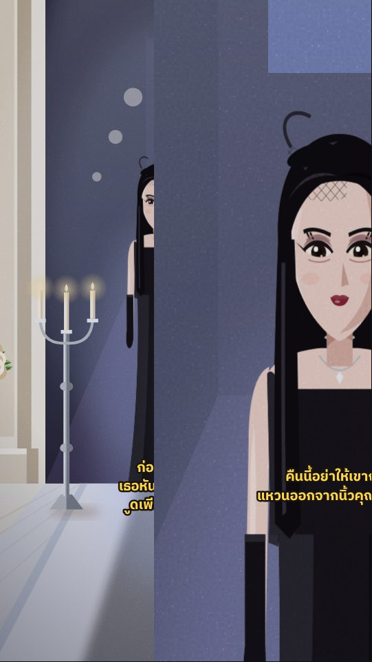
08MS · หันกลับมา
เสียง: ผู้บรรยาย
ก่อนพ้นประตู เธอหยุดแล้วหันกลับมามองตรงกล้อง (มุมมองเจ้าสาว)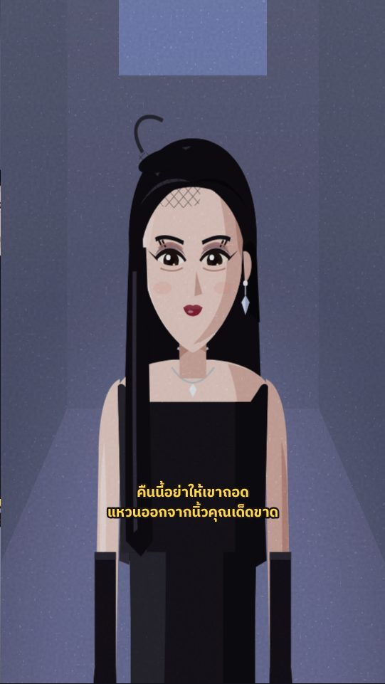
09ECU · ผู้หญิงชุดดำ
เสียง: ผู้หญิงชุดดำ
ใกล้มากที่ตาและปาก เสียงกระซิบเบา ๆ ไม่ตะโกน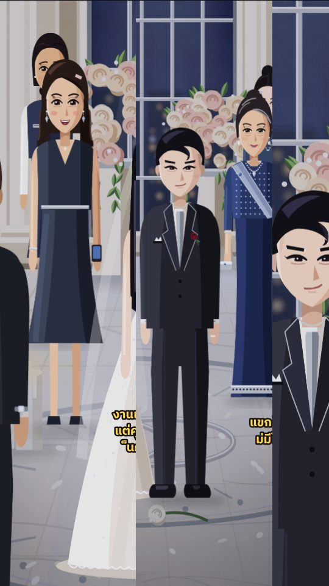
10MS · เจ้าสาว · ซูมเข้าช้า
เสียง: ผู้บรรยาย
กลับมาที่ห้องพิธี เจ้าสาวยังยิ้มแต่ตาเริ่มสงสัย ภาพเย็นลงเล็กน้อย กล้องค่อย ๆ ดันเข้าหาหน้า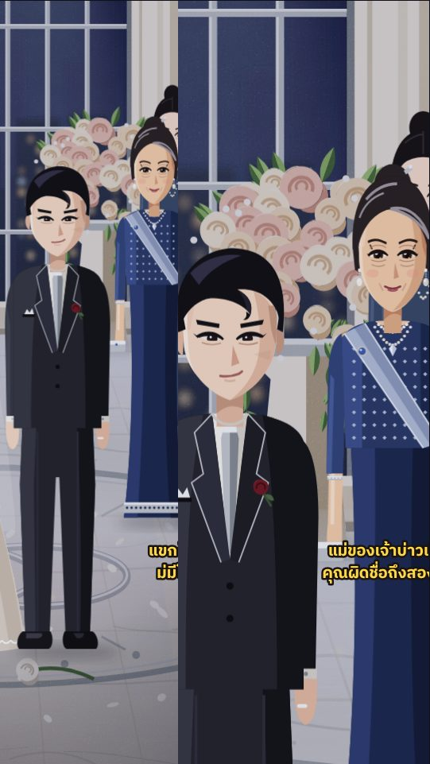
11MS · แขกฝั่งเจ้าบ่าว
เสียง: ผู้บรรยาย
แขกฝั่งเจ้าบ่าวยืนนิ่ง ยิ้มแข็ง ไม่มีใครยกมือถือ ตัดกับเพื่อนเจ้าสาวที่ถ่ายรูปอยู่ขอบเฟรม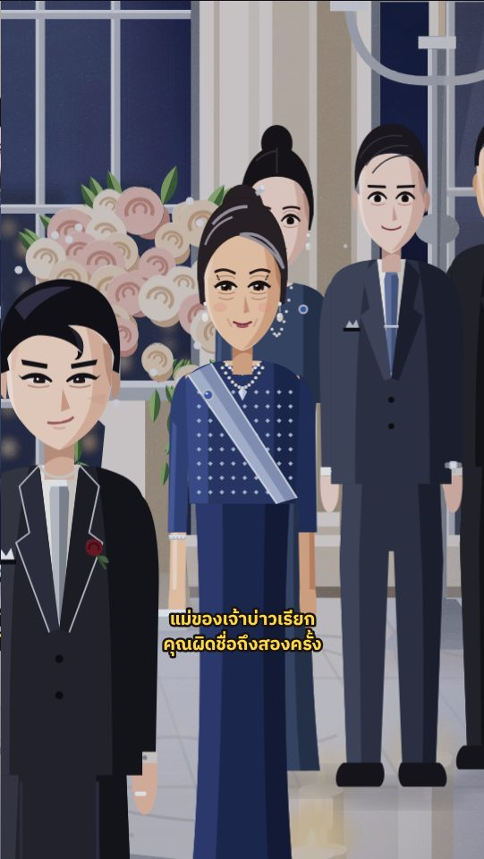
12CU · แม่เจ้าบ่าว
เสียง: ผู้บรรยาย
แม่เจ้าบ่าวยิ้มสุภาพแต่ตาไม่ยิ้มตาม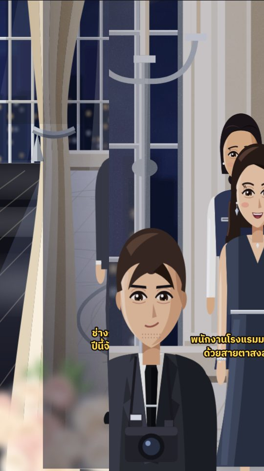
13MS · ช่างภาพ
เสียง: ผู้บรรยาย
ช่างภาพยิ้มเจื่อนเหมือนเพิ่งพูดอะไรผิด มือยังจับกล้อง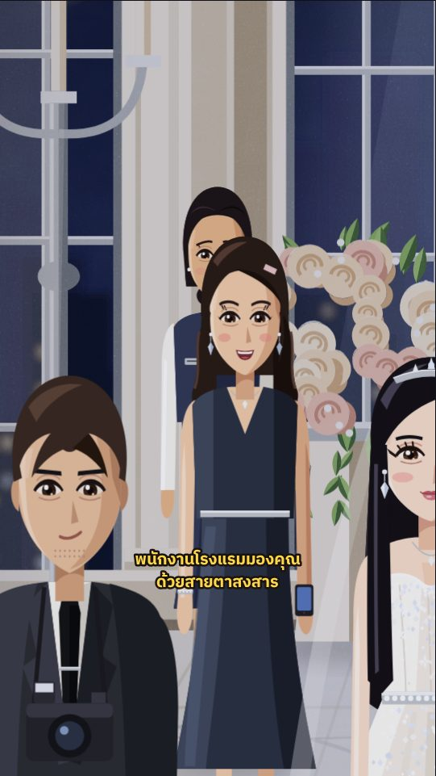
14CU · พนักงานโรงแรม
เสียง: ผู้บรรยาย
พนักงานมองมาที่กล้องด้วยสายตาสงสาร แล้วหลบตาฉากที่ 3 · ความจริงในห้องพักเจ้าสาว
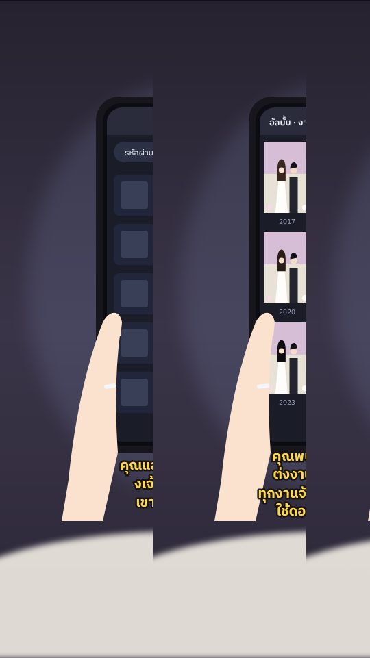
15CU · มือถือ
เสียง: ผู้บรรยาย
มือเจ้าสาวถือมือถือเจ้าบ่าวในห้องพักเจ้าสาว แสงจอส่องหน้า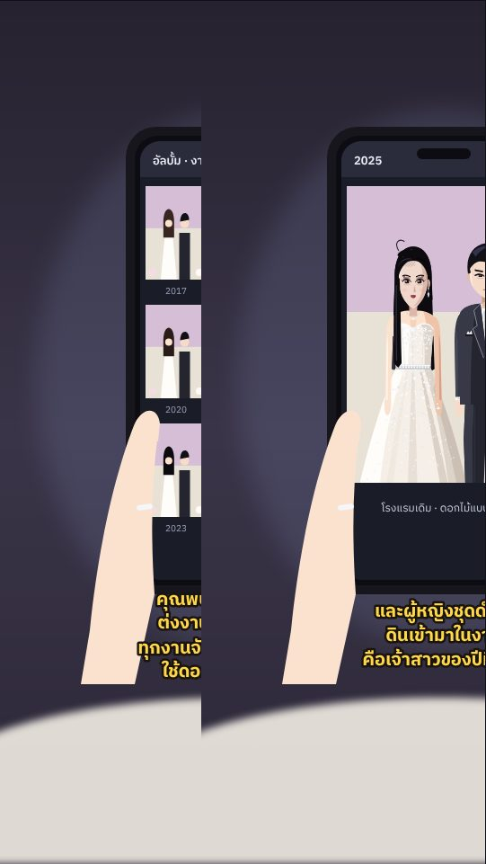
16ECU · จอมือถือ
เสียง: ผู้บรรยาย
อัลบั้มงานแต่งเก้าปี เจ้าบ่าวคนเดิมทุกรูป เจ้าสาวไม่ซ้ำหน้า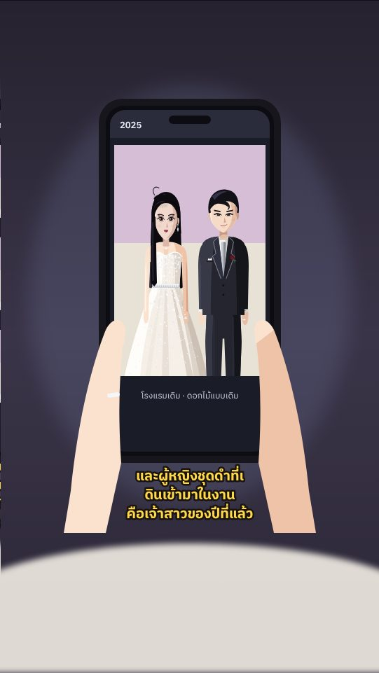
17ECU · รูปปีที่แล้ว
เสียง: ผู้บรรยาย
ซูมเข้ารูปปี 2025 เจ้าสาวในรูปคือผู้หญิงชุดดำ18ECU · ค้นหา
เสียง: ผู้บรรยาย
พิมพ์ชื่อเจ้าสาวทีละคน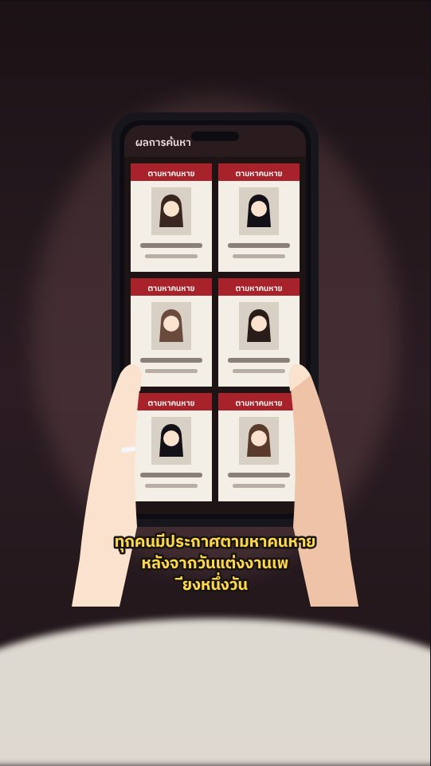
19ECU · ประกาศคนหาย
เสียง: ผู้บรรยาย
ผลค้นหาเป็นประกาศตามหาคนหายทั้งหมด เสียงทุ้มกระแทกเบา ๆฉากที่ 4 · คืนเข้าหอ
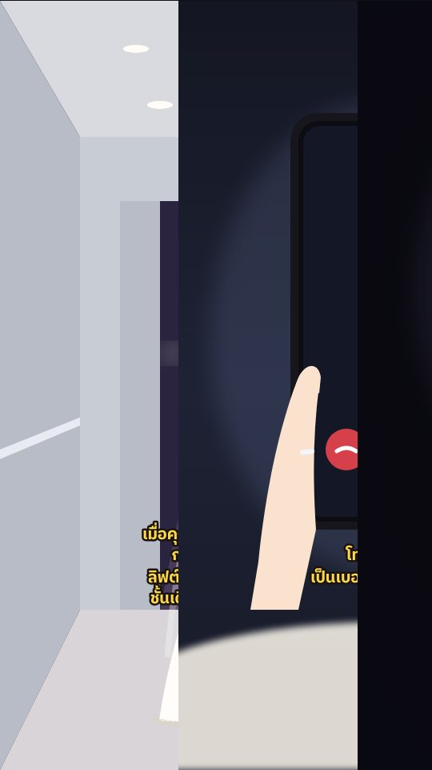
20WS · ลิฟต์
เสียง: ผู้บรรยาย
เจ้าสาวในลิฟต์ ประตูเปิดออกที่ชั้น 12 ทางเดินเดิมซ้ำแล้วซ้ำเล่า (ตัดซ้ำสามครั้ง)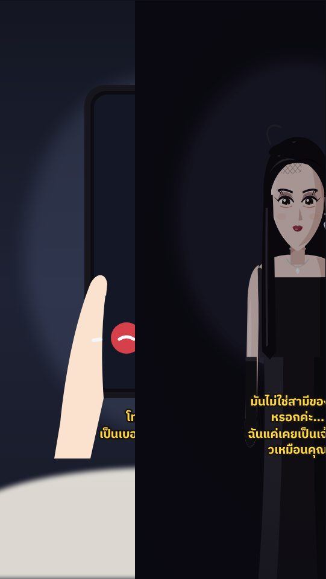
21CU · สายเข้า
เสียง: ผู้บรรยาย
มือถือเจ้าสาวมีสายเข้าจากเบอร์ที่ไม่รู้จัก ในห้องพักมืด ๆ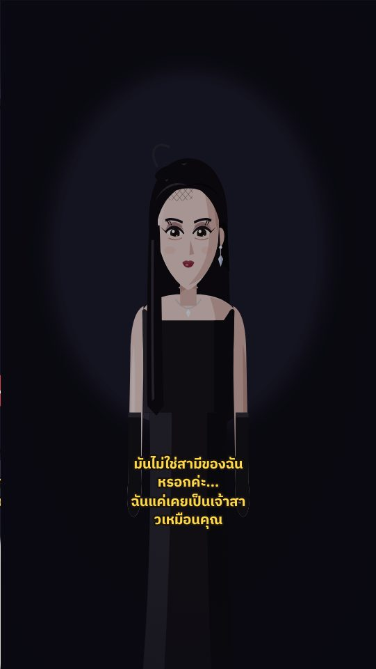
22CU · ผู้หญิงชุดดำ (ทางโทรศัพท์)
เสียง: ผู้หญิงชุดดำ
กล้องอยู่ที่ผู้พูดแม้คุยทางโทรศัพท์ เธอยืนในความมืด แสงอ่อนจากด้านหน้า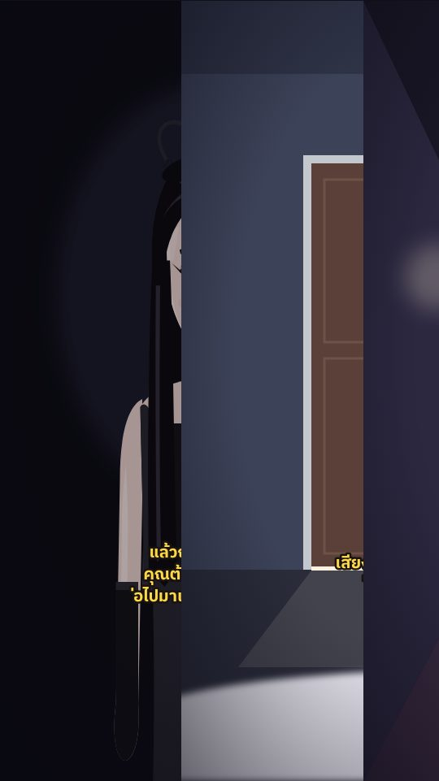
23ECU · ผู้หญิงชุดดำ
เสียง: ผู้หญิงชุดดำ
ใกล้ขึ้นอีก น้ำเสียงเรียบ ไม่ข่มขู่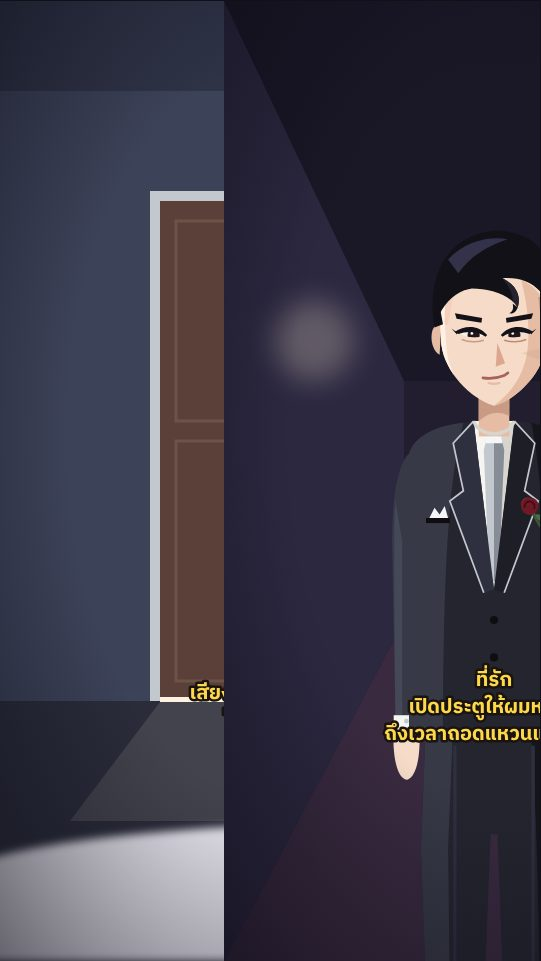
24MS · ประตูห้องพัก · กล้องนิ่ง
เสียง: ผู้บรรยาย
เงียบ แล้วเสียงเคาะสามครั้ง เห็นเงาเท้าสองข้างลอดใต้ประตู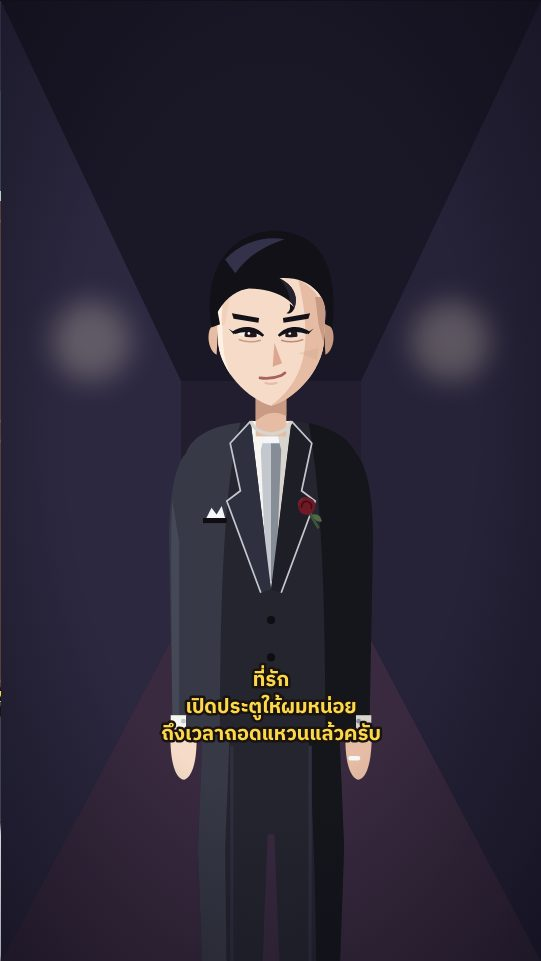
25CU · เจ้าบ่าวหลังประตู
เสียง: เจ้าบ่าว
กล้องอยู่ที่ผู้พูด เจ้าบ่าวยืนในทางเดินมืด ยิ้มมุมปาก พูดนุ่ม ๆฉากจบ · หนึ่งปีต่อมา
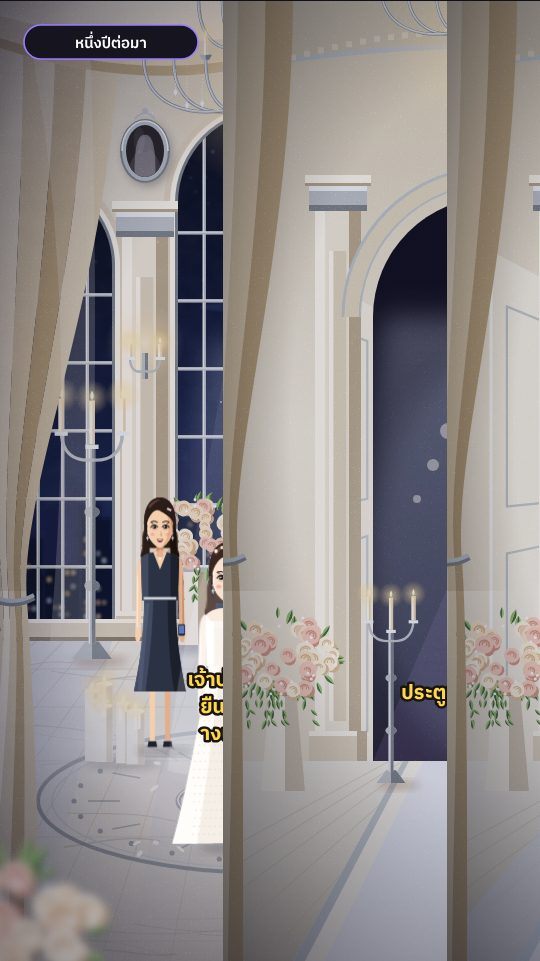
26WS · หนึ่งปีต่อมา
เสียง: ผู้บรรยาย
ห้องพิธีเดิม เจ้าบ่าวคนเดิมยืนยิ้มข้างเจ้าสาวคนใหม่ ป้ายเวลาที่มุมบน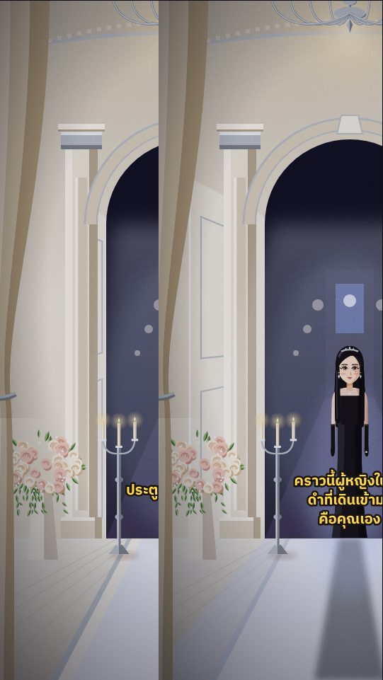
27WS · ประตู · กล้องนิ่ง
เสียง: ผู้บรรยาย
ประตูห้องจัดเลี้ยงค่อย ๆ เปิดออกอีกครั้ง จังหวะเดียวกับช็อต 4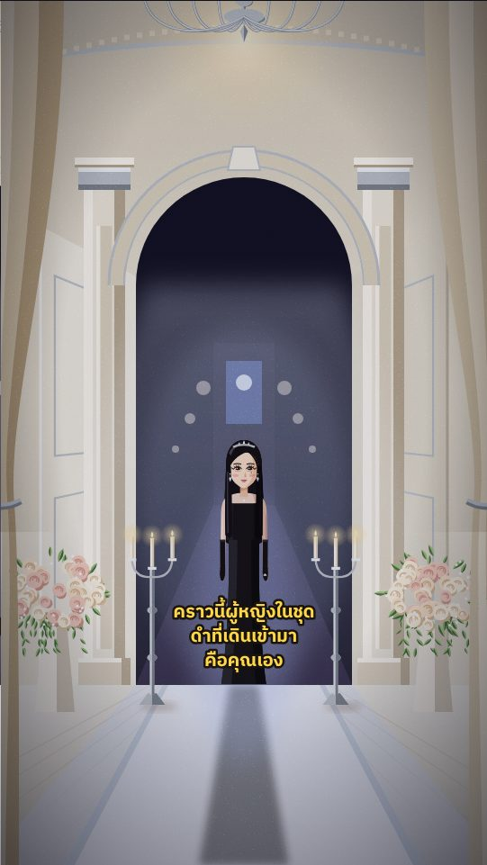
28MS · ประตู
เสียง: ผู้บรรยาย
ผู้หญิงชุดดำที่ยืนในกรอบประตูคราวนี้คือเจ้าสาวคนแรก (หน้าเจ้าสาว ชุดดำ แหวนเงินบนถุงมือ)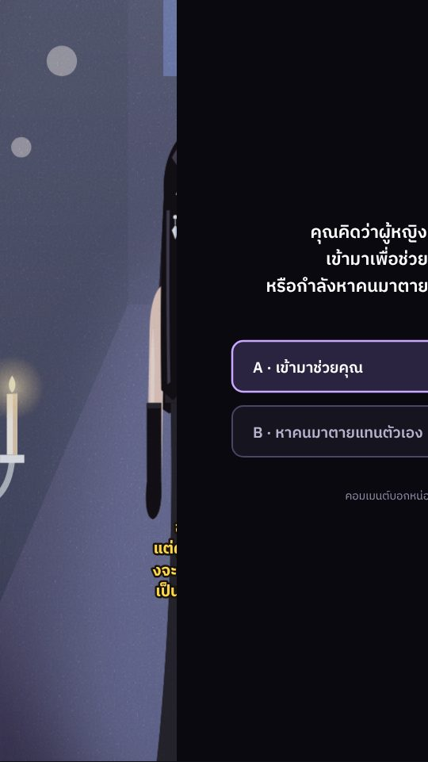
29CU · เจ้าสาวในชุดดำ
เสียง: เจ้าสาว (ชุดดำ)
กล้องอยู่ที่ผู้พูด ประโยคเดียวกับช็อต 6 คำต่อคำ30การ์ดคำถาม
เสียง: —
ตัดดำ แล้วขึ้นการ์ด A/B ไฮไลต์สลับไปมาพร้อมเสียงคลิก